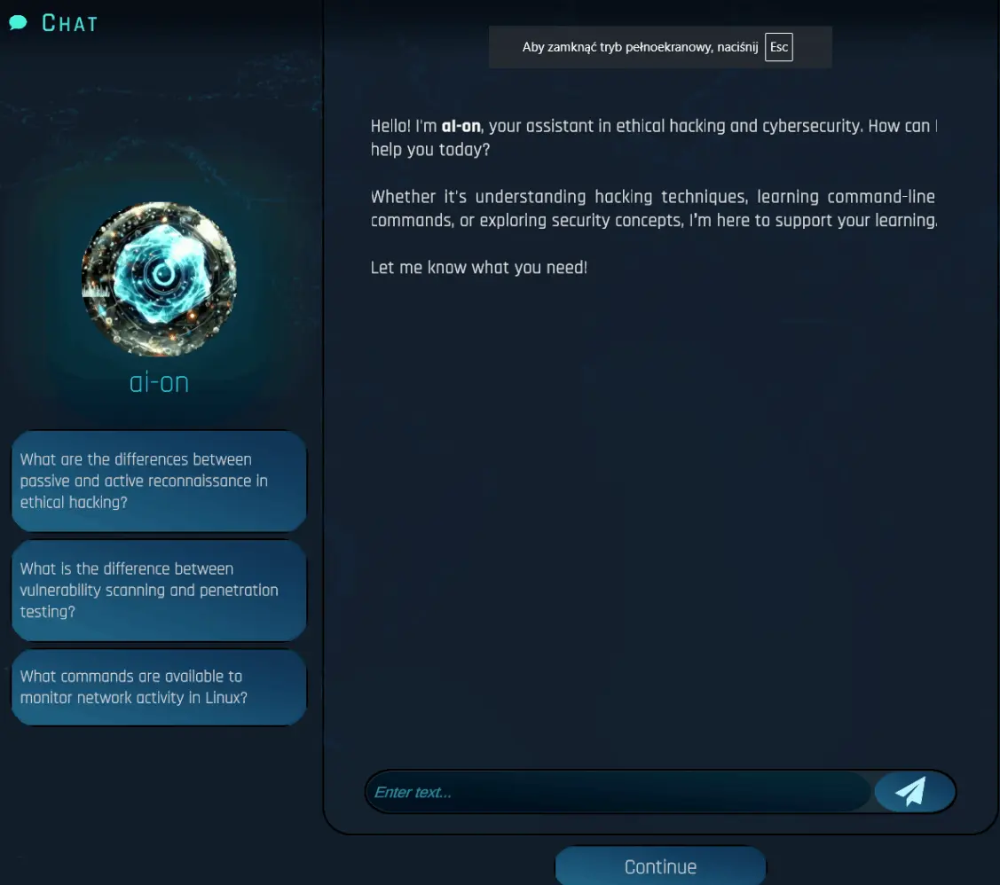

I am an Associate Professor of Information Systems at the Business School, University of Colorado Denver. I hold a Ph.D. in Informatics and an MBA from the University at Albany, State University of New York. My research focuses on the behavioral aspects of information security and human-computer interaction (HCI), examining how individuals make decisions in cybersecurity contexts and engage with emerging technologies. Specifically, I investigate user behavior in response to security and privacy threats, social engineering attacks, and privacy-invasive technologies such as social media platforms and wearable devices. I also explore the development of innovative security education, training, and awareness (SETA) programs to mitigate human error in cybersecurity.
Additionally, my work integrates design science research and HCI principles in contexts of emerging technologies, including artificial intelligence, blockchain, and immersive systems (e.g., virtual reality, serious games, and gamification). My research has been supported by funding from the National Science Foundation and the National Security Agency, and I have been recognized with several prestigious honors, including the AIS Outstanding Contribution to Education Award, the Distinguished Dissertation Award, and designation as a TIAA Chancellor’s Urban Engaged Scholar.
Story-driven Educational Hacking Game
Gamified Mindfulness-Based SETA Simulation

Guided training chatbot powered by LLMs
Nudging against dark design patterns to mitigate digital procrastination.
Interactive storytelling for security and privacy training